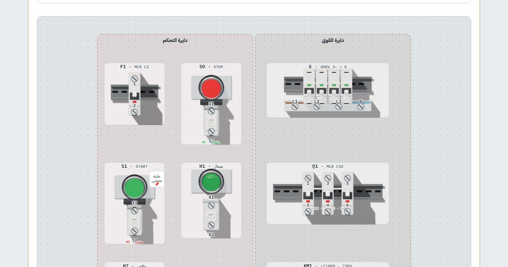

كورس · دواير التحكم والموتوربالعربي
كورس الكلاسيك كنترول
توصّل دواير الكونتاكتور والموتور بإيدك سلك سلك، والكورس يقولك صح ولا غلط وليه.
الدرس الأول مجاني، بحساب مجاني

المحتوى
الدروس
بالترتيب، وكل درس فيه شرح بسيط وتجارب بإيدك وأسئلة.
- عناصر التحكم البسيطةمفتوح للكلمفتاح، سلكتور، بوش بوتن، طوارئ، ليمت سويتش، لمبة، مصدر
- المفتاح والسلكتور
- البوش بوتن والطوارئ
- الليمت سويتش
- اللمبة والمصدر
- أسئلةأسئلة الدرس
- الريلاي المساعد والتثبيت الذاتيالكويل والكونتاكتات CO، الريلاي 8/11/14 pin والسوكت، التثبيت الذاتي (Latching)، والإنترلوك
- الريلاي المساعد
- التثبيت الذاتي (Latching)
- الإنترلوك بالريلاي
- أسئلةأسئلة الدرس
- الكونتاكتوركونتاكتات الباور والأوكسيليري، AC-1/AC-3، دايرة القوى ودايرة التحكم، وDOL بالتثبيت الذاتي
- الكونتاكتور
- دايرة القوى ودايرة التحكم
- DOL: موتور يعمل ويقف + مصابيح إشارة
- أسئلةأسئلة الدرس
- الحماية: الفيوز والقاطع والأوفرلودالفيوز وأنواعه، MCB ومنحنيات B/C/D، الأوفرلود الحراري (Ir، class 10، 95-96 و 97-98، فقد فاز)، MPCB، والحماية في دايرة DOL
- الفيوز والقاطع MCB
- الأوفرلود الحراري
- MPCB: القاطع الحراري المغناطيسي للموتور
- الحماية في دايرة DOL
- أسئلةأسئلة الدرس
- التايمراتOn-delay، Off-delay، والتايمر الدوري ومتعدد الوظائف، ودواير التايمر: التتابع، الحلقة، العربية والطلمبة (العملي 14–24)
- تايمر On-delay (TON)
- تايمر Off-delay (TOF)
- التايمر الدوري ومتعدد الوظائف
- دواير بالتايمر
- تمرينموتورين، التاني أوتوماتيك بعد الأول بزمن
- تمرينزي 14 بس الأول يقف لما التاني يشتغل
- تمرين3 موتورات بالتتابع، كل واحد بعد اللي قبله…
- تمرينمروحة تكمّل بعد وقوف الماكينة (Off-delay)
- تمرينلمبة بتنوّر وتطفي (Flasher)
- تمرينموتورين بالتبادل بزمن (الأول، وبعدين التاني ويفصل الأول…)
- تمرينحلقة 3 موتورات بتوقيت (الأول…
- تمرينالأول والتاني مع بعض…
- تمرينالأول، بعد زمن التاني والتالت…
- تمرينالكل مع بعض، بعد زمن يفصل التاني والتالت،…
- تمرينموتور يمين وشمال بالتبادل، وبين كل اتجاه وقفة
- تمرينعربية على سير تروح لـ B…
- تمرينالأول بمفتاح، التاني بعده بـ 5 ث…
- تمرينغلطة: التايمر على Off-delay وانت محتاج On-delay
- تمرينغلطة: 15-16 بدل 15-18
- أسئلةأسئلة الدرس
- الموتور الإندكشن 3 فازالتركيب والمجال الدوّار، اليافطة، علبة الأطراف ستار ودلتا، الاتجاه، جدول القدرات والتيارات، مقطع السلك
- التركيب والمجال الدوّار
- يافطة المحرك
- علبة الأطراف: ستار ودلتا
- الاتجاه
- تمرينموتور 3 أطراف DOL مع الأوفرلود
- تمرينغلطة: فازة ناقصة والموتور بيزن
- تمرينموتور 6 أطراف 230Δ/400Y على 400 V…
- تمرينموتور 6 أطراف 400Δ/690Y على 400 V…
- تمرينغلطة: دلتا على موتور 230/400 على 400 V
- تمرينعكس الاتجاه: بدّل فازتين
- تمرينمن اليافطة: اضبط الأوفرلود على In
- أسئلةأسئلة الدرس
- مفاتيح الضغط والمستوى والحساساتالبريشر سويتش، العوامة، حساسات التقارب PNP/NPN، والخلية الضوئية، ودواير الطلمبة والكباس والسير
- البريشر سويتش (مفتاح الضغط)
- العوامة ومفاتيح المستوى
- حساسات التقارب PNP / NPN
- الخلية الضوئية
- تمرينطلمبة وعوامة عليا بسلكتور HAND-0-AUTO
- تمرينعوامتين: السفلى تشغّل والعليا توقف (بتثبيت)
- تمرينكباس هوا ببريشر سويتش 6–8 bar
- تمرينخلية ضوئية توقف السير لما الكرتونة توصل
- تمرينحماية الطلمبة من الجفاف (Dry-run) بعوامة سفلى
- تمرينغلطة: حساس NPN متوصّل كأنه PNP
- أسئلةأسئلة الدرس
- تمارين التتابع والـ Jog وعكس الحركة (5–13)التشغيل بشرط، التتابع، الـ Jog، عكس الاتجاه بالإنترلوك، الونش بالليمت سويتش، والمخرطة (العملي 5–13)
- موتور بشرط موتور تاني (التمارين 5–8)
- الـ Jog بزرار مزدوج (التمرين 9)
- عكس الاتجاه والإنترلوك والليمت سويتش (التمارين 10–12)
- ماكينة الخرط بـ4 كونتاكتورات (التمرين 13)
- تمرينمحركين: الأول في أي وقت…
- تمرين3 محركات: الأول في أي وقت…
- تمرينمحركين: الأول في أي وقت…
- تمرين3 محركات: الأول في أي وقت…
- تمرينمحرك بمفتاح تشغيل وإيقاف + مفتاح مزدوج للتشغيل…
- تمرينغلطة: زرار الـ Jog بيثبّت
- تمرينمحرك في اتجاهين ويقف من مكان واحد +…
- تمرينغلطة: دايرة عكس من غير إنترلوك (قصر)
- تمرينمحرك في اتجاهين + مفاتيح نهاية الشوط…
- تمرينمحرك في اتجاهين، وتغيير الاتجاه مباشرة من غير…
- تمرينماكينة خرط: محرك يمين/يسار للخرط ومحرك يمين/يسار لضبط…
- أسئلةأسئلة الدرس
- مواضيع متقدمة: ستار/دلتا، الفرملة، التكييف، السوفت ستارترستار/دلتا أوتوماتيك ويدوي بتايمر Y-Δ، فرملة DC وعكس الفازات والفرامل الميكانيكية، دايرة كباس التكييف المركزي على 24V، والسوفت ستارتر بالبايباس
- ستار/دلتا الأوتوماتيك واليدوي
- طرق فرملة المحرك
- دايرة تحكم كباس تكييف مركزي
- السوفت ستارتر (البادئ الناعم)
- تمرينستار/دلتا أوتوماتيك بتايمر Y-Δ + لمبات
- تمرينستار/دلتا يدوي بزرارين (ستار ثم دلتا)
- تمرينغلطة: كباري الستار على الأطراف الغلط…
- تمرينغلطة: الإنترلوك بين KM2 و KM3 ناقص…
- تمرينفرملة بحقن تيار مستمر…
- تمرينفرملة بعكس الفازات (Plugging) بتايمر نبضة قصيرة
- تمرينفرامل كهرومغناطيسية (ونش): الكويل بيفتح الفرامل من كونتاكت…
- تمريندايرة تحكم كباس تكييف مركزي على 24V…
- تمرينغلطة: مفتاح الضغط الواطي LP متوصّل NO…
- تمرينإنذار الضغط العالي بريست يدوي…
- تمرينسوفت ستارتر بكونتاكتور بايباس من ريلاي نهاية الرامب…
- تمرينسوفت ستارتر بتحكم 2-wire من سلكتور + ريلاي…
- تمرينغلطة: كونتاكتور البايباس بيشد مع START (الرامب بيتعدّى)
- أسئلةأسئلة الدرس
الكورس بالأرقام
9دروس من العناصر البسيطة لحد ستار/دلتا والسوفت ستارتر
24تمرين عملي بتوصّله بإيدك والكورس بيصحّحه
1شهادة إتمام بكود تحقق
IECرموز IEC و NEMA جنب الشكل الحقيقي
الكلاسيك كنترول
إنت هتتعلّم إيه
- تعرف كل عنصر في اللوحة: بوش بوتن، سلكتور، طوارئ، ليمت سويتش، لمبة
- تفهم الريلاي المساعد والتثبيت الذاتي والإنترلوك
- توصّل دايرة قوى ودايرة تحكم لموتور DOL بالكونتاكتور
- تختار الحماية صح: فيوز، MCB، أوفرلود، و MPCB
- تشغّل التايمرات On-delay و Off-delay والدوري في دواير حقيقية
- تقرا يافطة الموتور 3 فاز وتوصّل علبة الأطراف ستار ودلتا
- تعكس اتجاه الموتور بإنترلوك، وتعمل تتابع و Jog
- توصّل ستار/دلتا أوتوماتيك وطرق الفرملة والسوفت ستارتر
لمين
مين الكورس ده ليه
- للفنيين والكهربائية اللي عايزين يفهموا اللوحة مش بس يقلّدوا
- لطلبة الدبلومات والمعاهد وهندسة كهربا
- لو هتدخل مقابلة شغل في مصنع أو صيانة
- قبل ما تبدأ في الانفرترات والـ PLC
أسئلة بتتكرر
قبل ما تسأل
محتاج خلفية قبل الكورس؟
يفضّل تكون عارف الجهد والتيار والتوالي والتوازي. لو لسه، ابدأ بكورس أساسيات الكهربا الأول وارجع هنا.
التوصيل بيبقى إزاي؟
بتسحب السلك من طرف لطرف على لوحة شبه اللوحة الحقيقية، وبعدين تشغّل الكهربا. لو فيه غلطة، الكورس بيقولك فين وليه.
فيه شهادة؟
أيوه. لما تخلّص كل تمارين الدروس وانت داخل بحسابك، تطلّع شهادة إتمام عليها اسمك وكود تحقق و QR.
الكورس مجاني؟
الدرس الأول مجاني لأي حد عامل حساب مجاني. باقي الدروس محتاجة حساب مجاني تعمله في ثواني بإيميلك.
ينفع على الموبايل؟
ينفع. اللوحة بتتظبط على الشاشة الصغيرة، بس التوصيل بيبقى أريح على تابلت أو كمبيوتر.
جاهز تبدأ الكلاسيك كنترول؟
الدرس الأول مجاني، بحساب مجاني. ادخل دلوقتي وكمّل على راحتك، وتقدّمك بيتحفظ.